After completing this lesson, you’ll be able to:
In this challenge, you can work through the garbage zones example from this course in more detail. This is an optional exercise to dive deeper into some FME functionality that's not the focus of the course.
1) Sample Source Data
There are more features in the address database than we need for workspace construction and testing, so let's reduce that to a smaller sample.
Rather than create a test dataset, here we'll use a Sampler transformer. There is a Sampler transformer in the "Transformers" bookmark, so move that transformer into the "Sample Addresses" bookmark and connect the PostalAddress feature type to it:
Inspect the Sampler's parameters. It will sample every 25th feature:

Run the workspace to be sure it is sampling the data correctly. Click on the magnifying glass on the Sampler's Sampled output port to view the data in the Visual Preview window. Note how many features come from the Sampler's Sampled port; you will need this number to answer the quiz.
2) Divide Data into Groups
Before trying to add the Zoning dataset into the workspace, let's try and create groups from the basic dataset. We can do this with a custom FME Hub transformer called the SpatialSorter.
So move the SpatialSorter from the "Transformers" bookmark to the "Divide Residents" bookmark:

The SpatialSorter sorts data spatially (so features closer geographically become closer in the sorted output) and creates groups.
Check the parameters for this transformer. Notice that the group parameter asks for group size, not the number of groups. Therefore, we'll need to calculate how many addresses there are when split into five groups.
3) Calculate Group Sizes
To calculate the number of addresses per group, we need the number of addresses and then divide that by five. We can do this with a combination of StatisticsCalculator and ExpressionEvaluator.
So, enlarge the Divide Residents bookmark as required and move the StatisticsCalculator and ExpressionEvaluator transformers from the "Transformers" bookmark. Connect them up to the Sampler's Sampled port like so:
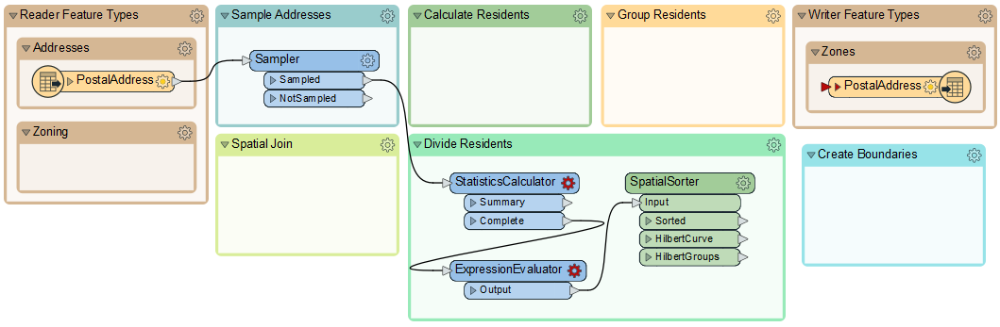
4) Calculate Group Sizes
Inspect the parameters for the StatisticsCalculator. This transformer will tell us how many features there are (the Total Count). Pick an attribute for the first row of the Attribute column. Because we only want to count features, not create true statistics, it can be any attribute you like. Here, we are using COUNTRY.
Check Total Count.

Click OK.
In the ExpressionEvaluator, enter GroupSize in the New Attribute parameter. In the Arithmetic Expression field, enter the expression:
@ceil((@Value(COUNTRY.total_count)/5))

The simplest way is to double-click the ceil function to add it, then double-click the TotalResidents attribute and manually add the /5 part.
This expression will divide the number of residents into five groups, rounding up. The rounding up part is essential, and it's what the ceil function does.
Run the translation and view the ExpressionEvaluator output in the Visual Preview window to ensure this part works. The TotalResidents should be 543, and the GroupSize should be 109 for each feature.
5) Group Residents
Now, look over the parameters for the SpatialSorter once more. We will leave Grid Size at 16 for now; this will give us a more coarse result but will run faster while we develop the workspace. Under the Group Size parameter, click the drop-down arrow and select Attribute Value > GroupSize:

This sets the group size to the attribute just calculated.
To create groups of addresses, move the Aggregator transformer to the "Group Residents" bookmark and connect it to the SpatialSorter's Sorted output port:

Inspect the parameters for the Aggregator. Set the Group By parameter to the GroupID attribute (in other words, aggregate features together in the groups created by the SpatialSorter):

Using an Inspector transformer, we can also set the Group By parameter, resulting in the data being represented with different colors for each group in the Visual Preview window. Connect an Inspector to the Aggregator's Aggregate output port, and then set the Group By to GroupID in the parameters. Run the translation, and you should find there are five sets of point aggregates in the output, each of which has approximately the same number of point features:
Tip
The Inspector transformer can be used to inspect data, but with Visual Preview and feature caching, there is little reason to use it often. This case, where you want to add a group-by to help visualize your data in groups, is one of the cases where this transformer is useful.
You can change the color of the groups by clicking on the Toggle Display Control button on the left-hand side of Visual Preview. Then, double-click on the quadrant/four-square icon to open the Geometry Drawing Styles dialog, where you can set the color. When the color is manually set, the quadrant icon will display the color.

6) Save Workspace
Save the workspace, including a date or version number (like GarbageCollection-2022-05-18.fmw).
In this section, you learned to plan your workspace in sections and work on each section one at a time. The next step in the workspace will be to add in the Zoning data, create a spatial join, and calculate how many residents live in each property based on each address's zoning type.
7) Add Reader
The first task is to identify which planning zone each address falls inside. We need to read the zoning data and carry out a spatial join. To read a new dataset of data in a different format requires a new reader.
So, select Readers > Add Reader from the menu bar. When prompted, enter the following parameters:
| Reader Format | MapInfo TAB (MITAB) |
| Reader Dataset |
https://s3.amazonaws.com/FMEData/FMEData/Data/Zoning.zip (C:\FMEData\Data\Zoning.tab) |

FME adds a reader to the Navigator window and a feature type to the canvas. Move the feature type into the Zoning bookmark:

8) Create Spatial Join
To carry out a spatial join, we'll use a PointOnAreaOverlayer transformer, a type of join called Point-in-Polygon.
So, move the PointOnAreaOverlayer transformer from the "Transformers" bookmark to the "Spatial Join" bookmark. Connect the newly added Zoning data to the Area port and the output from the Sampler to the Point port:

Inspect the PointOnAreaOverlayer parameters. Expand the Attribute Accumulation section and check Merge Attributes:
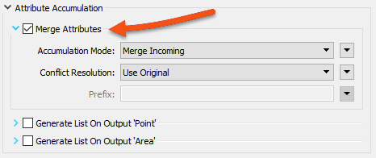
This transformer is the first we've used that has a live <Rejected> port. For now, we'll leave it to stop the translation since, during testing, we want to know about anything that causes a failure of the transformer.
Run the translation, ignore the Invalid Transformer Parameters dialog that pops up, and click Run. This dialog pops up because we have previously run the translation to the Aggregator, but now we have broken that connection. We will fix it in a bit.
Click on the PointOnAreaOverlayer's Point output port to view the data in the Visual Preview window. View both the Graphics and Table view. The overlay and attribute merging should cause each address to be given a zone name and category; click on any of the zones to confirm this.
9) Calculate Residents
The next step is to set how many residents live at a specific address according to its zoning type.
We know that:
| Zone Begins With | Zone Type | Residents |
|---|---|---|
| RS | Single Family | 2 |
| RT | Two Family | 4 |
| RM | Multiple Family | 12 |
| CD | Comprehensive | 8 |
| C | Commercial | 1 |
For example, zones RS-1, RS-2, and RS-3 are all single-family zones, and we assume two adults per address. This assumption makes it slightly more complicated because we need to match a zone type using a "begins with" string comparison.
This match can be done using an AttributeManager with Conditional Values.
This step is slightly complex, but luckily, the AttributeManager inside the "Transformers" bookmark is already set up for this purpose. So move the AttributeManager into the "Calculate Residents" bookmark and connect it to the PointOnAreaOverlayer's Point output port:

To see the Conditional Values, open the parameters dialog for the AttributeManager and click the drop-down arrow in the Attribute Value field for the Persons attribute. Choose Conditional Value:
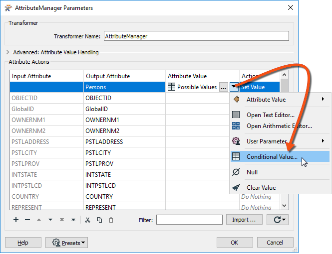
Doing so opens a Tester-like dialog with multiple conditions that test for each zone type and specify an attribute value to set them to:

If you want to challenge yourself, try adding a blank AttributeManager instead of moving the existing one. Then, create the conditional statements to match the image above.
10) Create Residents
We now know (or have approximated) the number of residents per address. However, we must use that number in a way that will affect the output. The simplest way to do this is to create multiple copies of each address, one for each resident.
For example, we'll create eight address points for an address with eight residents.
We can do this very simply with a Cloner transformer. So, move the Cloner transformer from the "Transformers" bookmark to the "Calculate Residents" bookmark. Connect the AttributeManager to the Cloner's input and its output to the StatisticsCalculator:

Inspect the Cloner parameters. For the Number of Copies parameter, click the drop-down arrow and choose Attribute Value > Persons:
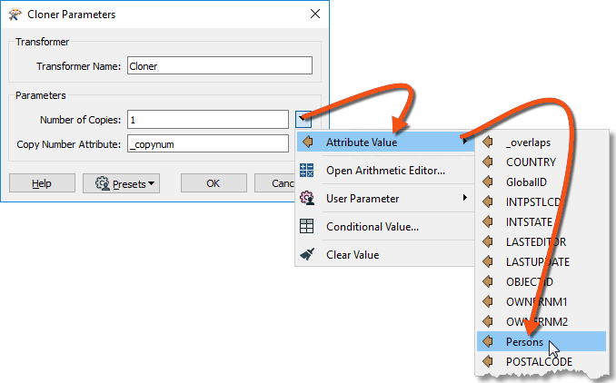
Doing so will create <Persons> copies of the original addresses (note that the transformer doesn't output the original as well, so the output is <Persons> features, not <Persons>+1).
11) Run Translation
Ensure an Inspector is still attached to the Aggregator transformer and run the translation. The translation will fail with the error message:
Cloner_<Rejected>: Termination Message: 'Cloner output a <Rejected> feature.'
The translation failed because addresses without a resident (for example, Industrial) have no Persons attribute and are rejected by the Cloner transformer. The <Rejected> port is still set up to stop the translation, so we get this error.
There are various choices to handle this. We could:
Setting the Conditional Values would be the best solution to deal with the problem directly. But there might be other causes for rejected data, and we want to deal with that without stopping the translation.
Setting the Rejected Feature Handling parameter means all <Rejected> ports would ignore rejected output. This setting might be helpful in a production workspace, but we would probably want to stop the translation to be aware of issues immediately in testing.
So, the better solution is to add a transformer to the Cloner <Rejected> port. We don't need to inspect or log these features because we know they will exist. So, connect the <Rejected> port to a small transformer called a Junction:

This Junction will handle the rejected output but quietly drop it without further fuss.
Re-run the translation. The output should be five groups of point features again, but in a different pattern than the end of the previous section:

12) Write the Output
Now, to write some output. The simplest method is to connect the Aggregator output to the PostalAddress output feature type and re-run the workspace.
However, it would also be helpful to rename the output feature type and remove all its attributes since they are from the reader dataset and don't apply here. So open the writer feature type parameters dialog. In the Parameters tab, rename the feature type to GarbageZones.

In the User Attributes tab, remove all the attributes being written.

Your writer feature type should look something like this:

Also, we should change the GeoPackage writer parameter Overwrite Database to overwrite the database each time we run the workspace. To do this, find the GarbageZones [GEOPACKAGE] writer in the Navigator, expand the Parameters, double-click Overwrite Database, and then check the box and click OK:
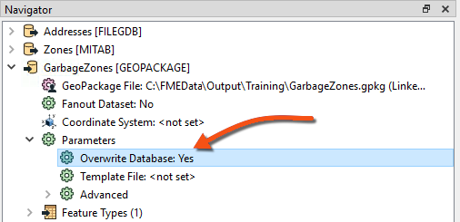
Enabling this parameter means we won't accumulate more and more results in the same dataset.
Congratulations. Now, you have a dataset of addresses grouped by their new garbage collection zone. The following section will turn these points into non-overlapping polygons designating the zones.
13) Add a HullReplacer Transformer
Move the HullReplacer transformer from the "Transformers" bookmark into the "Create Boundaries" bookmark. Connect it between the Aggregator and writer feature type:
Notice how the HullReplacer has no cache because it is newly placed.
14) Re-Run the Workspace
Now, let's re-run the workspace. But rather than re-write the output data, we can run just the new transformer we added. Click on the HullReplacer transformer, and on the icons that pop up, click Run To This:

Notice how hovering shows what parts of the workspace will be run. Since we already have features cached to the Aggregator (assuming you haven't closed the workspace since it was last run), only the section between the Aggregator and the HullReplacer will be run.
Click on the cached features on the HullReplacer's Hull output port to confirm the data. The output now includes polygons to prove that the translation has functioned correctly:

Now, the task is to replace the groups of point features with a polygon boundary.
15) Add a HullReplacer Transformer
Move the HullReplacer transformer from the "Transformers" bookmark into the "Create Boundaries" bookmark. Connect it between the Aggregator and writer feature type:
Notice how the HullReplacer has no cache because it is newly placed.
16) Re-Run the Workspace
Now, let's re-run the workspace. But rather than re-write the output data, we can run just the new transformer we added. Click on the HullReplacer transformer, and on the icons that pop up, click Run To This:
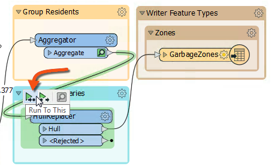
Notice how hovering shows what parts of the workspace will be run. Since we already have features cached to the Aggregator (assuming you haven't closed the workspace since it was last run), only the section between the Aggregator and the HullReplacer will be run.
Using the Run To This option is an excellent method to check your translation before writing the data out, especially if you are writing to a database or an online source.
Note that the Run button will default only to run sections of the workspace after valid caches, which would have a similar effect. The only additional step it would take is writing the data again.
Click on the cached features on the HullReplacer's Hull output port. The output now includes polygons, proving that the translation has functioned correctly:

17) Clean Up Overlaps
The problem with the output is the polygons overlap. That needs to be fixed so that there are no overlaps. Moreover, we should check which zone an overlap belongs to by seeing which group contains the most addresses.
We can accomplish this last step using the transformers in the Clean Up Overlaps bookmark below the Transformers bookmark.
18) Add an AreaOnAreaOverlayer Transformer
Add the AreaOnAreaOverlayer from the Clean Up Overlaps bookmark. Connect it to the HullReplacer transformer. We will use it to break the overlaps down into their component parts. Check the parameters and set the Attribute Accumulation Mode to Drop Incoming Attributes.

19) Add a PointOnAreaOverlayer Transformer
The overlaps are now separate features, but we must determine which area to assign them. It should have the most addresses; for example, if an overlap contains 31 addresses from group one and 52 addresses from group two, it should be assigned to the group two polygon.
We can start on this by using a PointOnAreaOverlayer. This transformer will let us create a list of which addresses an overlap contains.
So, add a PointOnAreaOverlayer transformer. The area features will be the output from the AreaOnAreaOverlayer.
The point features should be a copy of the addresses. The simplest way to get these is to make a second connection from the SpatialSorter:

Inspect the parameters. Under Attribute Accumulation, set the following parameters:
| Merge Attributes | Yes |
| Generate List on Output 'Area' | Yes |
| 'Area' List Name | PointList |
| Selected Attributes | GroupID |
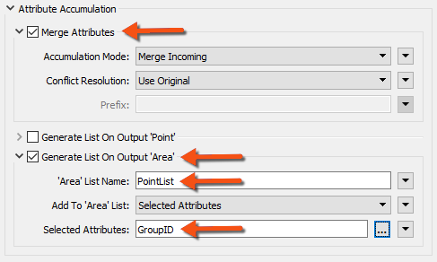
Doing so will create an FME list attribute. A list attribute is an attribute with multiple values. The list will record the point features (and their GroupID values) that fall inside a polygon.
Confirm this works correctly by running the workspace at the new PointOnAreaOverlayer. Notice how the translation pulls data from two caches: the AreaOnAreaOverlayer and SpatialSorter transformers:

Inspect the PointOnAreaOverlayer's Area output port features. Selecting a feature will show (in the Feature Information window) the list attribute and all of its values:
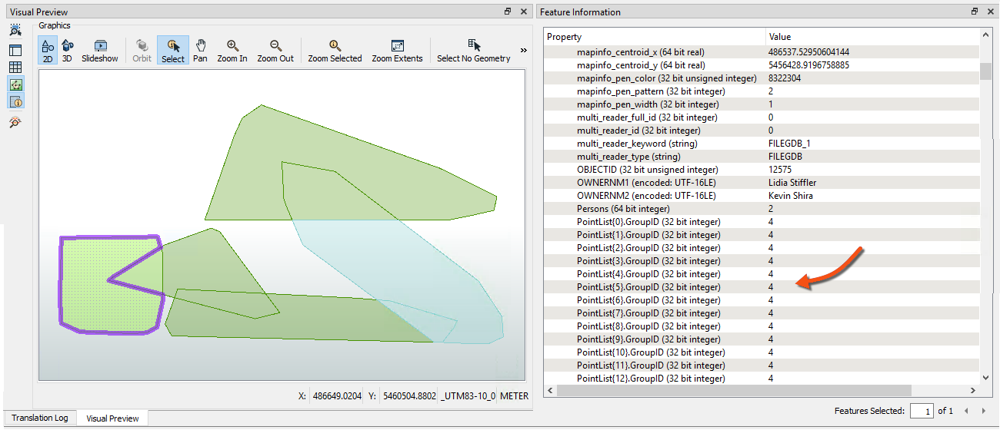
20) Add a ListHistogrammer Transformer
To count the most frequent GroupID for each list on an overlap, we'll use the ListHistogrammer transformer.
This is not a commonly used transformer, so don't worry if you weren't aware of it or if you are concerned about the large number of transformers available in FME. You will learn more about these transformers with practice. For now, the ability to use partial runs is much more critical.
Place a ListHistogrammer transformer connected to the PointOnAreaOverlayer's Area output port. Inspect the parameters and select PointList{}.GroupID as the source attribute:

Re-run the workspace (from the ListHistogrammer) and inspect the results. Notice that a new list attribute is created, a list of the number of different GroupID values with the most frequent GroupID at the top. So, we merely need to use that GroupID to merge areas.
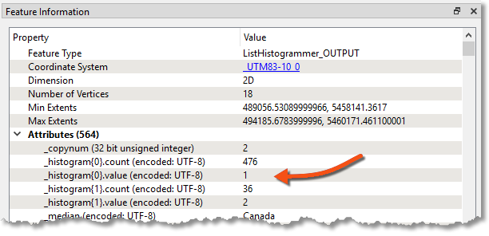
21) Add a Dissolver Transformer
Finally, add a Dissolver transformer to merge the features. Connect the Dissolver to the ListHistogrammer output port:
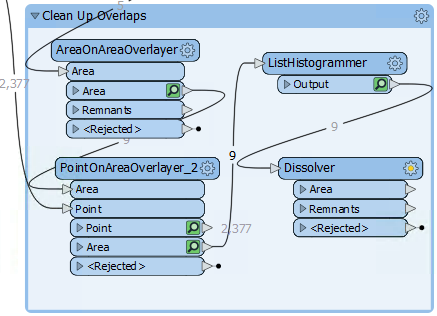
Inspect the parameters. Under Group Processing > Group By, select the attribute _histogram.value:

You'll be prompted for a value; this is which item we want in the list. We want the first element because it has the most values, so this field should be set to zero (which it will be by default):

Run the workspace to the Dissolver and inspect the Dissolver's Area output port:
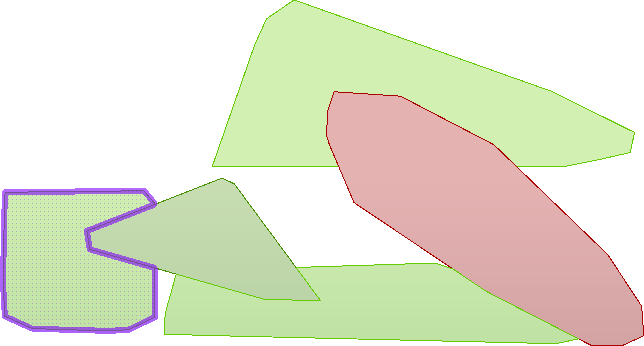
We now have five polygon features to represent garbage collection areas, each with approximately the same number of residents. Connect the Dissolver's Area port to the writer feature type; this workspace is nearly complete.
22) Remove the Sampler Transformer
To complete the project, let's run the workspace on the entire dataset, but first, let's get the workspace ready for production.
Delete the Sampler transformer, ensuring that PostalAddress and the PointOnAreaOverlayer's Point input port are connected.
Instead of deleting the Sampler, you can disable it. Right-click on the Sampler and choose Disable, then connect the PostalAddress and PointOnAreaOverlayer like the above step. If you need to come back and tweak something, the dataset can be sampled again easily.
Before we run the translations, let's disable feature caching as the PostalAddress dataset is large. Click on the dropdown next to the Run button and click Enable Feature Cache to disable it:

Now, with feature caching disabled, the Run button will run the entire workspace:

As expected, the result will look different now that we're using the entire dataset: